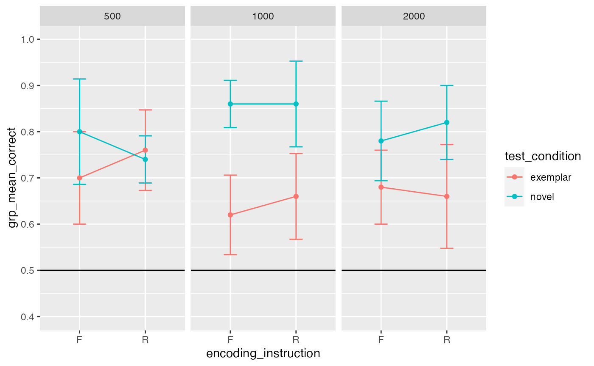
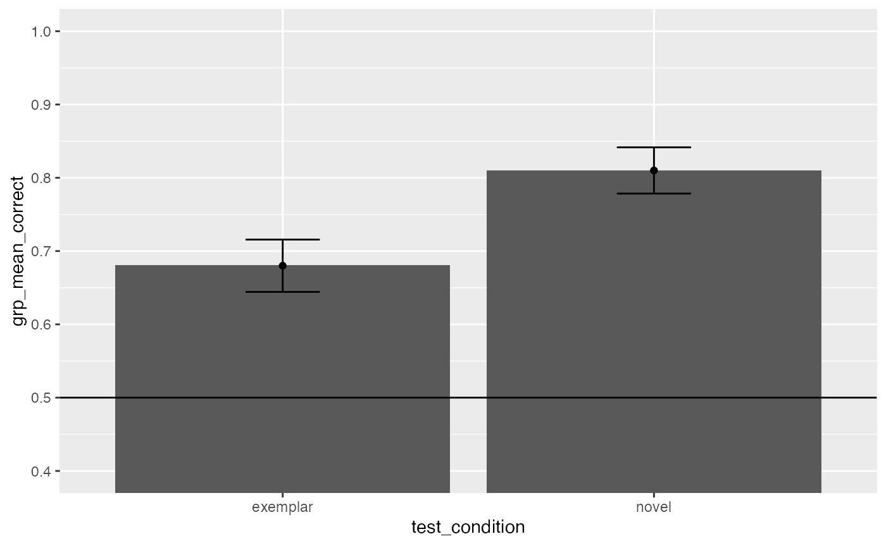
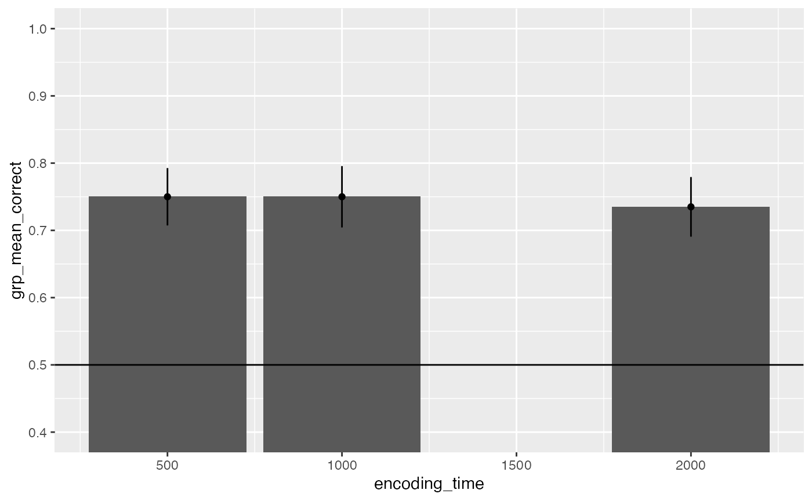
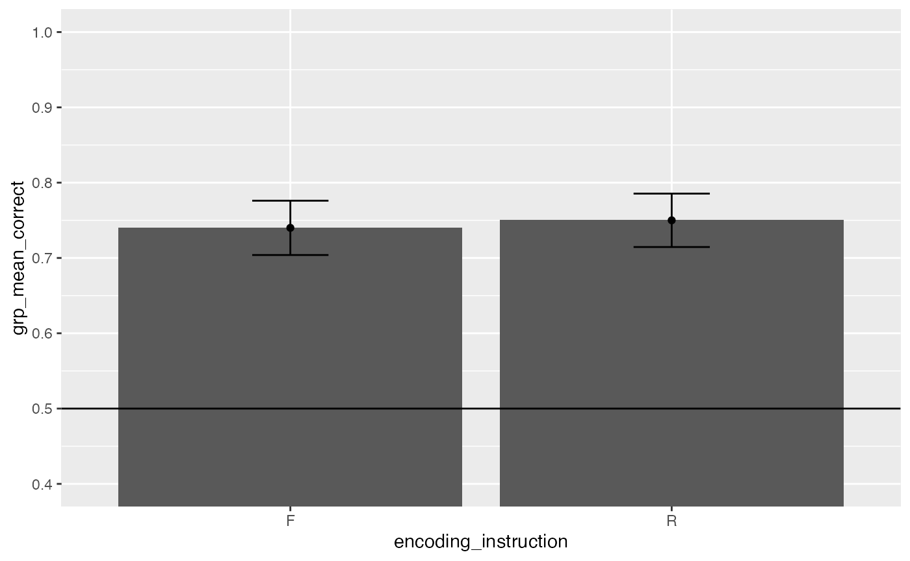

Pilot_E1_analysis.RmdThis is a pilot analysis of 5 subjects worth of data collected from a pilot version of this experiment. Data collected 12/2021.
##
## Attaching package: 'dplyr'## The following objects are masked from 'package:stats':
##
## filter, lag## The following objects are masked from 'package:base':
##
## intersect, setdiff, setequal, union## ── Attaching packages ─────────────────────────────────────── tidyverse 1.3.1 ──## ✓ ggplot2 3.3.5 ✓ purrr 0.3.4
## ✓ tibble 3.1.6 ✓ stringr 1.4.0
## ✓ tidyr 1.2.0 ✓ forcats 0.5.1
## ✓ readr 2.0.2## Warning: package 'tidyr' was built under R version 4.1.2## ── Conflicts ────────────────────────────────────────── tidyverse_conflicts() ──
## x dplyr::filter() masks stats::filter()
## x dplyr::lag() masks stats::lag()##
## Attaching package: 'jsonlite'## The following object is masked from 'package:purrr':
##
## flatten
# Read the text file from JATOS ...
read_file('../experiments/DF_pictures_1/jatos_results_20211206204357.txt') %>%
# ... split it into lines ...
str_split('\n') %>% first() %>%
# ... filter empty rows ...
discard(function(x) x == '') %>%
# ... parse JSON into a data.frame
map_dfr(fromJSON, flatten=T) -> dataNote: In the pilot experiment script, the stimulus duration time was encoded to the data file during the encoding phase, but not during the recognition memory test phase. The following R code chunk, analyzes the encoding phase for each participant, and adds the stimulus duration time factor to the recognition memory test phase data.
# add stimulus encoding factor
all_data <- data.frame()
for( sub in unique(data$ID)){
temp_data <- data %>%
filter(ID==sub)
temp_study <- temp_data %>%
filter(experiment_phase == "study")
temp_test <- temp_data %>%
filter(experiment_phase == "test")
encoding_time <- c()
for(i in 1: dim(temp_test)[1]){
im_name <- temp_test[i,]$study_item_image_name
get_trial <- temp_study %>%
filter(image_name == im_name)
encoding_time[i]<-get_trial$stimulus_time
}
temp_test <- cbind(temp_test,encoding_time)
all_data <- rbind(all_data,temp_test)
}
# select data from test phase
filtered_data <- all_data %>%
filter(experiment_phase == "test")
# get mean accuracy in each condition for each subject
get_means <- filtered_data %>%
group_by(ID,encoding_time,encoding_instruction,test_condition)%>%
summarize(mean_correct = mean(correct))## `summarise()` has grouped output by 'ID', 'encoding_time',
## 'encoding_instruction'. You can override using the `.groups` argument.
# get mean accuracy in each condition across subjects
get_group_means <- get_means %>%
group_by(encoding_time,encoding_instruction,test_condition)%>%
summarize(grp_mean_correct = mean(mean_correct),
sem = sd(mean_correct)/sqrt(length(mean_correct)))## `summarise()` has grouped output by 'encoding_time', 'encoding_instruction'. You
## can override using the `.groups` argument.
# print table
knitr::kable(get_group_means)| encoding_time | encoding_instruction | test_condition | grp_mean_correct | sem |
|---|---|---|---|---|
| 500 | F | exemplar | 0.70 | 0.1000000 |
| 500 | F | novel | 0.80 | 0.1140175 |
| 500 | R | exemplar | 0.76 | 0.0871780 |
| 500 | R | novel | 0.74 | 0.0509902 |
| 1000 | F | exemplar | 0.62 | 0.0860233 |
| 1000 | F | novel | 0.86 | 0.0509902 |
| 1000 | R | exemplar | 0.66 | 0.0927362 |
| 1000 | R | novel | 0.86 | 0.0927362 |
| 2000 | F | exemplar | 0.68 | 0.0800000 |
| 2000 | F | novel | 0.78 | 0.0860233 |
| 2000 | R | exemplar | 0.66 | 0.1122497 |
| 2000 | R | novel | 0.82 | 0.0800000 |
# print graph
library(ggplot2)
ggplot(get_group_means, aes(x=encoding_instruction,y=grp_mean_correct,group=test_condition, color=test_condition))+
geom_line()+
geom_errorbar(aes(ymin = grp_mean_correct-sem,
ymax = grp_mean_correct+sem),
width=.2)+
geom_point()+
facet_wrap(~encoding_time)+
coord_cartesian(ylim=c(.4,1))+
geom_hline(yintercept=.5)+
scale_y_continuous(breaks = seq(0.4,1,.1))
get_group_means <- get_means %>%
group_by(test_condition)%>%
summarize(grp_mean_correct = mean(mean_correct),
sem = sd(mean_correct)/sqrt(length(mean_correct)))
ggplot(get_group_means, aes(x=test_condition,y=grp_mean_correct))+
geom_bar(stat="identity")+
geom_errorbar(aes(ymin = grp_mean_correct-sem,
ymax = grp_mean_correct+sem),
width=.2)+
geom_point()+
coord_cartesian(ylim=c(.4,1))+
geom_hline(yintercept=.5)+
scale_y_continuous(breaks = seq(0.4,1,.1))
get_group_means <- get_means %>%
group_by(encoding_time)%>%
summarize(grp_mean_correct = mean(mean_correct),
sem = sd(mean_correct)/sqrt(length(mean_correct)))
ggplot(get_group_means, aes(x=encoding_time,y=grp_mean_correct))+
geom_bar(stat="identity")+
geom_errorbar(aes(ymin = grp_mean_correct-sem,
ymax = grp_mean_correct+sem),
width=.2)+
geom_point()+
coord_cartesian(ylim=c(.4,1))+
geom_hline(yintercept=.5)+
scale_y_continuous(breaks = seq(0.4,1,.1))
get_group_means <- get_means %>%
group_by(encoding_instruction)%>%
summarize(grp_mean_correct = mean(mean_correct),
sem = sd(mean_correct)/sqrt(length(mean_correct)))
ggplot(get_group_means, aes(x=encoding_instruction,y=grp_mean_correct))+
geom_bar(stat="identity")+
geom_errorbar(aes(ymin = grp_mean_correct-sem,
ymax = grp_mean_correct+sem),
width=.2)+
geom_point()+
coord_cartesian(ylim=c(.4,1))+
geom_hline(yintercept=.5)+
scale_y_continuous(breaks = seq(0.4,1,.1))
# get means for each subject in each condition
# select data from test phase
filtered_data <- all_data %>%
filter(experiment_phase == "test")
# get mean accuracy in each condition for each subject
subject_means <- filtered_data %>%
group_by(ID,encoding_time,encoding_instruction,test_condition)%>%
summarize(mean_correct = mean(correct))## `summarise()` has grouped output by 'ID', 'encoding_time',
## 'encoding_instruction'. You can override using the `.groups` argument.
# convert IVs to factors for RM anova
subject_means <- subject_means %>%
mutate(ID = as.factor(ID),
encoding_time = as.factor(encoding_time),
encoding_instruction = as.factor(encoding_instruction),
test_condition = as.factor(test_condition))
# 2x2x3 Repeated measures ANOVA
aov_out <- aov(mean_correct ~ encoding_instruction*test_condition*encoding_time + Error(ID/(encoding_instruction*test_condition*encoding_time)), data= subject_means)
summary(aov_out)##
## Error: ID
## Df Sum Sq Mean Sq F value Pr(>F)
## Residuals 4 0.9427 0.2357
##
## Error: ID:encoding_instruction
## Df Sum Sq Mean Sq F value Pr(>F)
## encoding_instruction 1 0.0015 0.0015 0.091 0.778
## Residuals 4 0.0660 0.0165
##
## Error: ID:test_condition
## Df Sum Sq Mean Sq F value Pr(>F)
## test_condition 1 0.25350 0.25350 10.42 0.032 *
## Residuals 4 0.09733 0.02433
## ---
## Signif. codes: 0 '***' 0.001 '**' 0.01 '*' 0.05 '.' 0.1 ' ' 1
##
## Error: ID:encoding_time
## Df Sum Sq Mean Sq F value Pr(>F)
## encoding_time 2 0.0030 0.00150 0.065 0.938
## Residuals 8 0.1853 0.02317
##
## Error: ID:encoding_instruction:test_condition
## Df Sum Sq Mean Sq F value Pr(>F)
## encoding_instruction:test_condition 1 0.00417 0.004167 0.172 0.699
## Residuals 4 0.09667 0.024167
##
## Error: ID:encoding_instruction:encoding_time
## Df Sum Sq Mean Sq F value Pr(>F)
## encoding_instruction:encoding_time 2 0.001 0.0005 0.016 0.984
## Residuals 8 0.244 0.0305
##
## Error: ID:test_condition:encoding_time
## Df Sum Sq Mean Sq F value Pr(>F)
## test_condition:encoding_time 2 0.08100 0.04050 3.574 0.0778 .
## Residuals 8 0.09067 0.01133
## ---
## Signif. codes: 0 '***' 0.001 '**' 0.01 '*' 0.05 '.' 0.1 ' ' 1
##
## Error: ID:encoding_instruction:test_condition:encoding_time
## Df Sum Sq Mean Sq F value
## encoding_instruction:test_condition:encoding_time 2 0.02033 0.01017 0.575
## Residuals 8 0.14133 0.01767
## Pr(>F)
## encoding_instruction:test_condition:encoding_time 0.584
## Residuals
# try a t-test
subject_means_t <- filtered_data %>%
group_by(ID,encoding_instruction)%>%
summarize(mean_correct = mean(correct))## `summarise()` has grouped output by 'ID'. You can override using the `.groups`
## argument.
t.test(mean_correct ~ encoding_instruction, paired=TRUE, data=subject_means_t)##
## Paired t-test
##
## data: mean_correct by encoding_instruction
## t = -0.30151, df = 4, p-value = 0.778
## alternative hypothesis: true difference in means is not equal to 0
## 95 percent confidence interval:
## -0.10208427 0.08208427
## sample estimates:
## mean of the differences
## -0.01
t.test(mean_correct ~ encoding_instruction, paired=TRUE, data=subject_means_t)$statistic^2## t
## 0.09090909
# Report individual main effects and interactions
aov_summary <- summary(aov_out)
print_anova <- papaja::apa_print(aov_summary)
print_anova$full_result$encoding_instruction_test_condition## [1] "$F(1, 4) = 0.17$, $\\mathit{MSE} = 0.02$, $p = .699$, $\\hat{\\eta}^2_G = .002$"
print_anova$full_result$encoding_instruction_encoding_time## [1] "$F(2, 8) = 0.02$, $\\mathit{MSE} = 0.03$, $p = .984$, $\\hat{\\eta}^2_G = .001$"
print_anova$full_result$test_condition_encoding_time## [1] "$F(2, 8) = 3.57$, $\\mathit{MSE} = 0.01$, $p = .078$, $\\hat{\\eta}^2_G = .042$"
print_anova$full_result$encoding_instruction_test_condition_encoding_time## [1] "$F(2, 8) = 0.58$, $\\mathit{MSE} = 0.02$, $p = .584$, $\\hat{\\eta}^2_G = .011$"The proportion of accurately recognized encoding stimuli was collected for each of the subjects who participated in the pilot study. The recorded proportions were then averaged according to the conditions present in this 2x2x3 within subjects experimental design. Mean proportion correct for each subject was then submitted to a 2: Cue instruction conditions (R vs F), by 2: Test conditions (Novel vs Exemplar), by 3: Stimulus duration conditions (500ms vs 1000ms vs 2000ms), repeated measures analysis of variance.
The main effect of cue instruction condition was, \(F(1, 4) = 0.09\), \(\mathit{MSE} = 0.02\), \(p = .778\), \(\hat{\eta}^2_G = .001\). Mean accuracy in the remember condition was X, and mean accuracy in the forget condition was X.
The main effect of test condition was, \(F(1, 4) = 10.42\), \(\mathit{MSE} = 0.02\), \(p = .032\), \(\hat{\eta}^2_G = .120\). Mean accuracy in the novel test condition was X, and mean accuracy in the exemplar test condition was X.
The main effect of stimulus duration was, \(F(2, 8) = 0.06\), \(\mathit{MSE} = 0.02\), \(p = .938\), \(\hat{\eta}^2_G = .002\). Mean accuracy in the 500 ms condition was X, mean accuracy in the 1000 ms condition was X, and mean accuracy in the 2000 ms condition was X.
The two-way interaction between encoding instruction and test condition was, \(F(1, 4) = 0.17\), \(\mathit{MSE} = 0.02\), \(p = .699\), \(\hat{\eta}^2_G = .002\). The two-way interaction between encoding instruction and stimulus duration was, \(F(2, 8) = 0.02\), \(\mathit{MSE} = 0.03\), \(p = .984\), \(\hat{\eta}^2_G = .001\). The two-way interaction between test condition and stimulus duration was, \(F(2, 8) = 3.57\), \(\mathit{MSE} = 0.01\), \(p = .078\), \(\hat{\eta}^2_G = .042\). Finally, the three-way interaction was, \(F(2, 8) = 0.58\), \(\mathit{MSE} = 0.02\), \(p = .584\), \(\hat{\eta}^2_G = .011\).